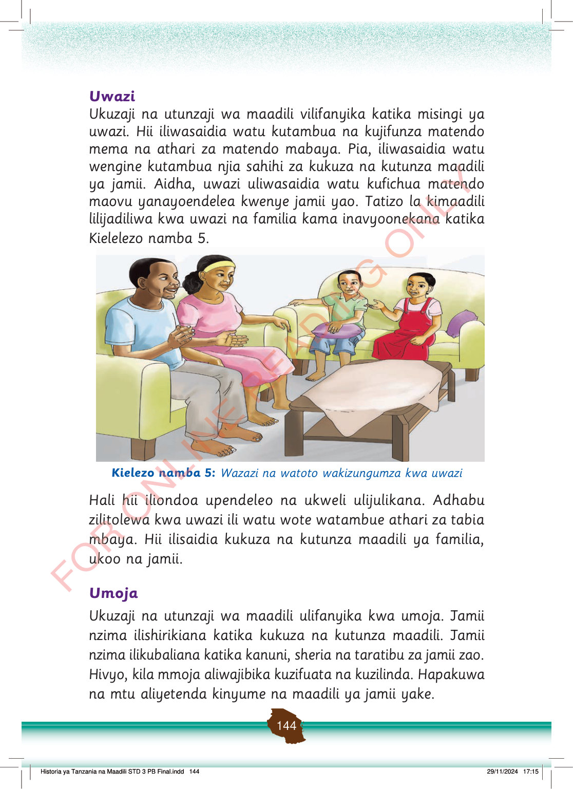

Uwazi
Ukuzaji na utunzaji wa maadili vilifanyika katika misingi ya uwazi.
Hii iliwasaidia watu kutambua na kujifunza matendo mema na athari za matendo mabaya.
Pia, iliwasaidia watu wengine kutambua njia sahihi za kukuza na kutunza maadili ya jamii.
Aidha, uwazi uliwasaidia watu kufichua matendo maovu yanayoendelea kwenye jamii yao.
Tatizo la kimaadili lilijadiliwa kwa uwazi na familia kama inavyoonekana katika Kielelezo namba 5.
Wazazi na watoto wamekaa sebuleni wakizungumza kwa uwazi. Wanasikilizana na kubadilishana mawazo kwa upendo.
Kielezo namba 5: Wazazi na watoto wakizungumza kwa uwazi
Hali hii iliondoa upendeleo na ukweli ulijulikana.
Adhabu zilitolewa kwa uwazi ili watu wote watambue athari za tabia mbaya.
Hii ilisaidia kukuza na kutunza maadili ya familia, ukoo na jamii.
Umoja
Ukuzaji na utunzaji wa maadili ulifanyika kwa umoja.
Jamii nzima ilishirikiana katika kukuza na kutunza maadili.
Jamii nzima ilikubaliana katika kanuni, sheria na taratibu za jamii zao.
Hivyo, kila mmoja aliwajibika kuzifuata na kuzilinda.
Hapakuwa na mtu aliyetenda kinyume na maadili ya jamii yake.
Historia ya Tanzania na Maadili STD 3 PB Final.indd 144
29/11/2024 17:15